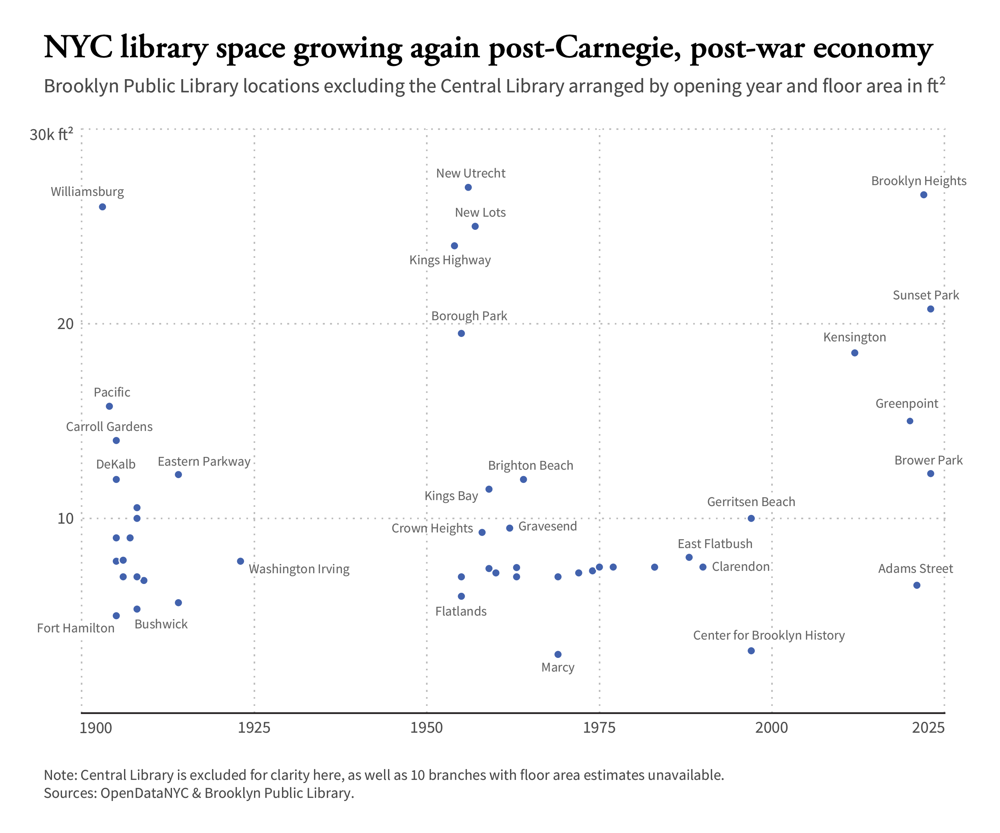
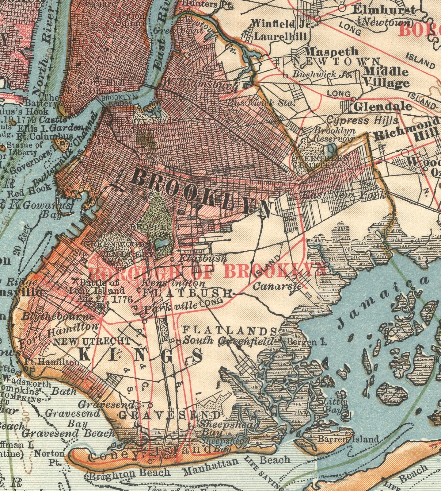
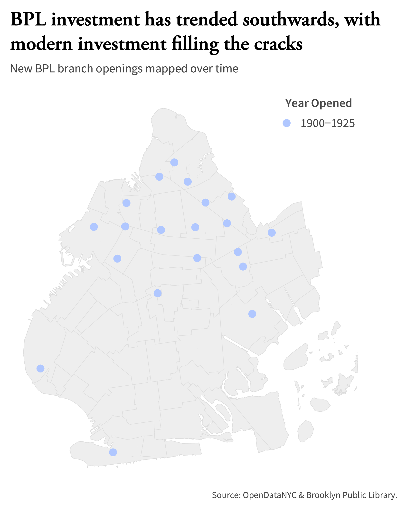
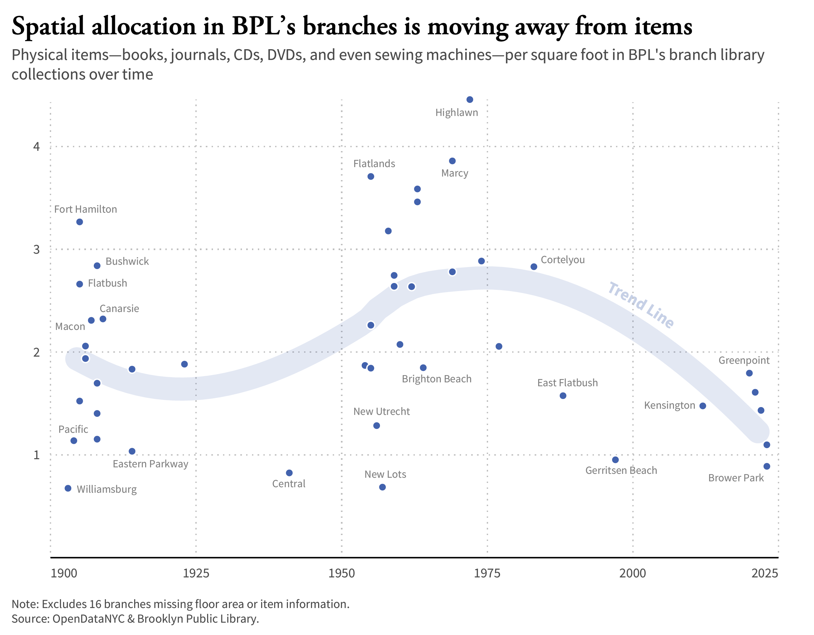

Brooklyn Central Library, 1941, from the Library of Congress
by Jesse Hogan
May 2, 2024
Although I frequented my local library growing up, it wasn’t until my senior year of high school that I fell in love with libraries. Aiming to pass time on a road trip, I remember stumbling across 99% Invisible’s "Palaces for the People" episode and pressing play. Those 50 minutes of listening opened my eyes to the ways in which libraries have morphed social service provision across the United States, a history that began with Andrew Carnegie and continues to this day.
More than four years later, approaching the end of my final semester of college, it’s perhaps unsurprising that I have returned to libraries (intellectually, but also physically, I suppose, before I am invariably revoked of my access to Brown’s vast collections). I have been thinking a lot in particular about New York City’s Library system, first because I have spent a fair amount of time in the city over the past year, but also because I have been studying Greenpoint’s 2020 public library redesign for my senior capstone in Architecture.
Amid my research, I could not help but become interested in Brooklyn’s system at large: where has it come from and where is it headed?
Publicly available data on OpenDataNYC, the Brooklyn Public Library (BPL) website, and the Institute of Museum and Library Services (IMLS) suggest that Greenpoint’s recent library investment is not standalone in Brooklyn.
According to the American Library Association, New York is home to one of the best-funded library systems in the US. That funding originally emerged through Carnegie philanthropy, but investment in the wake of world war and more modern federal and municipal sourcing have also contributed to new project builds and renovations.
That investment has also followed a rough geographic trend of industry and residential growth.
Residences and industry were concentrated in northern Brooklyn circa 1900, via Encyclopædia Britannica
It is interesting to see that libraries built in the past decade have only filled in more space, even in a crowded city run by an administration that has continuously sparked controversy for proposed library budget cuts and hours slashing in the past year.
How has that additional space actually been utilized, though?
Greenpoint’s library redesign is fascinating in its unique allocation of floor area towards environmental education and programming, including lab spaces, a large community event space, and reading rooms and collections for each age range, in addition to its more traditional library programming space.

I was surprised to see only 3 rows of bookshelves when I visited the library in March (perhaps I am overly used to university stacks).
The data is telling, here. At the recommendation of a few incredibly kind BPL staffers (shoutout to Ames in the Office of Strategic Planning and the person who took my phone call mid-March), I compiled item counts of every available branch collection, and put that in conversation with floor area totals.
Note that the ratios of items to square feet range, but generally hover just over 1 item : 1 square foot.
Thank god books are meant to sit vertically.
Even with the rise of digital collections and information access, it should be noted that libraries are not being used any less. According to this study published by the ALA last November, 54% of Gen Z and Millenials visited a physical library within the previous 12 months.
So what's going on?
Months ago I had the chance to interview Karen Fairbanks, one of the architects behind the Greenpoint Library redesign. She underscored what the data here shows.
“Generally, academic and public libraries have been in the process of flipping the proportion of space for collections more towards people.”
When Andrew Carnegie invested in libraries in New York and beyond at the turn of the 20th century, he called them "Palaces for the People."
In an increasingly digital world, it is encouraging to see that the value libraries provide remains, carving out space for people and information to be in community.
A huge thank you to Reuben Fischer-Baum for an incredibly enjoyable few months of instruction on R, ggplot, Illustrator, data visualization, and data journalism. This story would not exist otherwise.